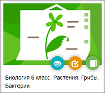

Здесь вы можете работать с учебными материалами, интегрированными с системой "Сетевой Город. Образование". Слева в панели "Тематика" выберите интересующую вас группу курсов или предмет.
Наполняемые учебные курсы Это курсы, которые можете создать сами и ввести в систему. Для этого нужно будет воспользоваться программой "Импорт курсов", на которую указывает кнопка Импорт учебных курсов в правом верхнем углу экрана. Там же вы найдете описание формата, в каком формате нужно создать учебный курс, чтобы его можно было импортировать в систему.
Система тестирования "Votum" Система тестирования Votum(разработка компании "Современные Технологии") - это система пультового голосования и проверки качества знаний.
Система тестирования "РОСТ" "Региональная Образовательная Система Тестирования" ("РОСТ") может использоваться в качестве системы итоговой проверки знаний, назначения домашних заданий, а также в качестве варианта обеспечения дистанционного обучения. С подробной информацией о системе тестирования "РОСТ" вы можете ознакомиться, перейдя по ссылке http://www.ir-tech.ru/?products=rost.
Система дистанционного обучения "Moodle"
Возможность обмена данными с системой дистанционного обучения "Moodle" http://www.moodle.org/ описана здесь.
Учебные курсы компании "Новый Диск"
По целому ряду школьных предметов можно воспользоваться готовыми учебными курсами из серии "Электронные плакаты и тесты" (разработка компании "Новый Диск"):
·
Английский язык
·
Биология
·
Литература
·
Литературное чтение
·
Математика
·
Окружающий мир
·
Русский язык
·
Физика
·
Химия
Действия с интегрированным учебным курсом
На примере курса "Биология. 6 класс" рассмотрим действия с учебным курсом:

Первая пиктограмма Просмотр материала - выводит оглавление курса, а для некоторых курсов также и текстовое содержимое, без тестовой части. (Эта пиктограмма доступна всем пользователям.)
Вторая пиктограмма Назначение задания - позволяет учителю выбрать конкретный параграф учебника и соответствующий ему блок тестов и назначить это ученикам. Ученик в своём дневнике увидит задание в назначенный день и может выполнить его, а оценка автоматически будет проставлена в электронный журнал "Сетевого Города".
Внимание! Если пользователь не является учителем, то он не может назначить задание.
Третья пиктограмма Журнал результатов - выводит таблицу всех заданий, уже назначенных по данному курсу, и полученные оценки.